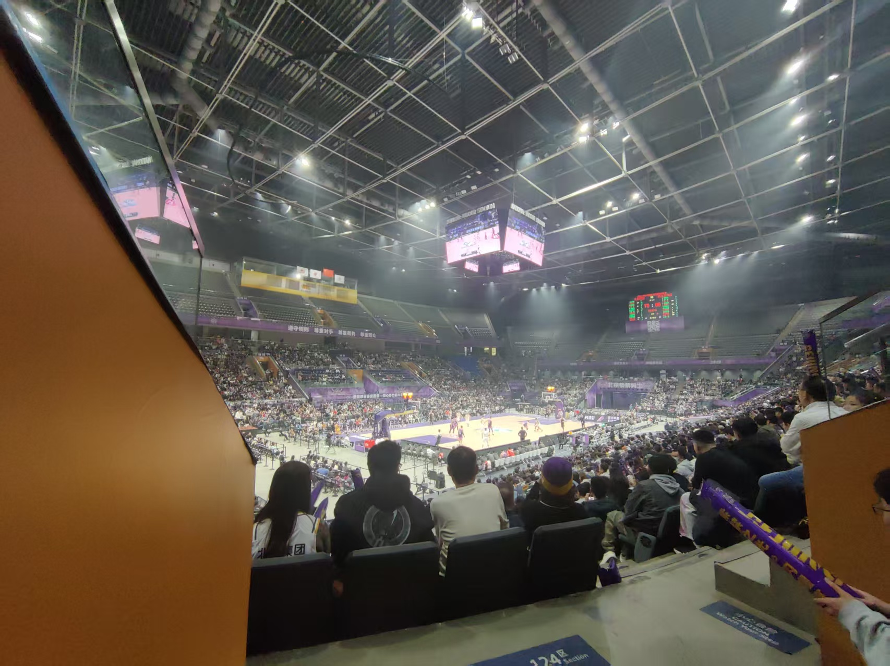

年龄19，爱好见后文，籍贯河北承德，满族，现居河北保定，电话：18731258515
性格较为内向，贪玩，进行过一段时间美术学习，参加过三次演出项目，取得民谣吉他考级八级，参与班级毕业视频配乐，通过努力考上了当地的重点高中，还算圆满。
性格改善，学习起伏不定，经历了最初的住宿生活，和同学相处很好，明白了失去手机以后也可以很开心（在学校探险，登上教学楼顶，宿舍吃火锅，打雪仗堆雪人等等），也会很充实（在高三时努力登上了颁奖仪式，获得了三好学生），是印象深刻回味无穷的时期
加入了一个社团，体验了很多活动，获得了一个志愿者证书，丰富了经历。 当下正在准备雅思考试出国学习，最关心语言的积累与进步
